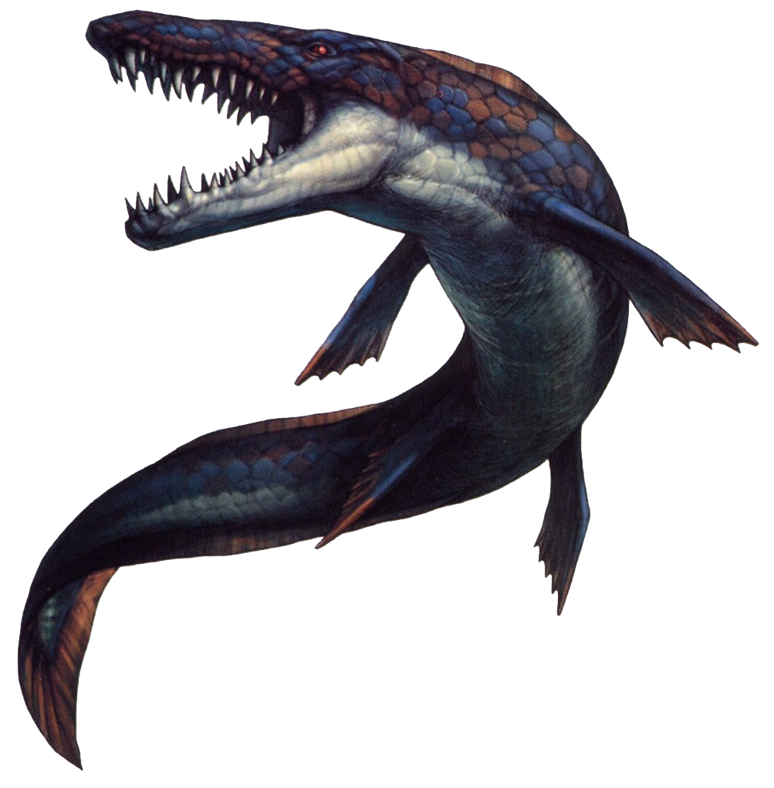
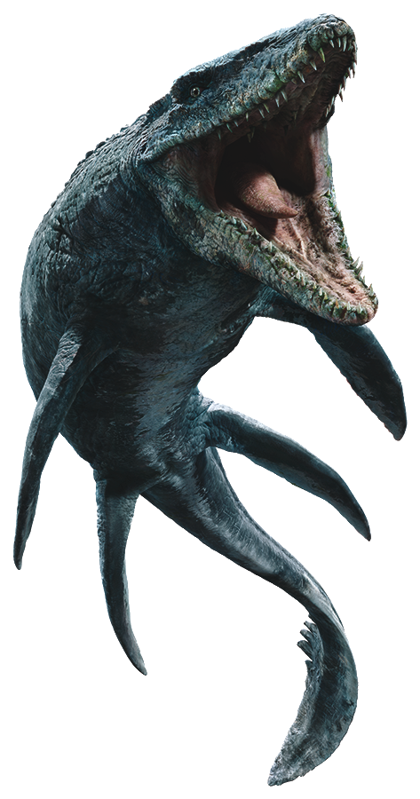

What are about Mosasaurus
Mosasaurus is an extinct aquatic reptile that lived at the very end of the Cretaceous Period, from around 82.7 to 66 million years ago. Mosasaurus was not a dinosaur; like other mosasaurs, it was descended from lizards that originally lived on land. Because of this, Mosasaurus belongs to the reptilian order Squamata, which contains all lizards and snakes.
Mosasaurus lived in the Atlantic Ocean and in connected seas, such as the Western Interior Seaway, which divided North America into two separate landmasses for much of the Cretaceous Period.
Mosasaurus was a large, powerful, fast-moving and well-armed predator that likely sat at the top of the food-chain in the oceans of the Mesozoic Era.
Mosasaurus lived from around 82.7 to 66 million years ago, at the very end of the Cretaceous Period. It became extinct in the Cretaceous-Paleogene Extinction Event that also wiped out the non-avian dinosaurs, plesiosaurs, pterosaurs, ammonites, and many other animals and plants.
Facts about Mosasaurus
The name Mosasaurus means: “Lizard of the Meuse River”.
The Mosasaurus lived in the Late Cretaceous Period between 66 and 70 million years ago.
The largest discovered specimen of Mosasaurus had a length of up to 56 feet.
The length of the Mosasaurus was greater then the fearsome Tyrannosaur rex.
The teeth of a Mosasaurus were shaped like sharp spikes, allowing them grip and hold onto their prey.
The double-hinged jaw of the Mosasaurus would allow it to swallow its prey whole.
The Mosasaurus spent most of its time near the ocean surface, much like modern whales do, since they breathed air in a similar fashion.
